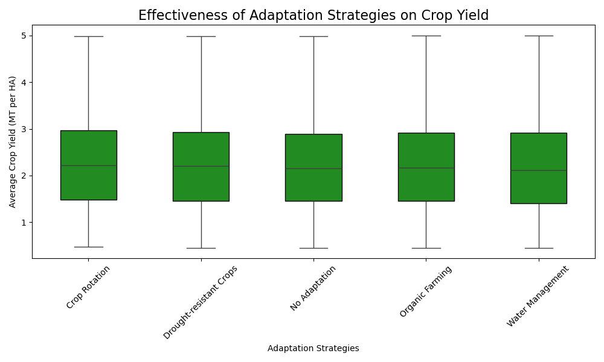

Effectiveness of Adaptation Strategies
As agricultural practices continue to follow the pace of technological innovation, it is important to evaluate the effectiveness of different adaptation strategies on crop yield. The box plots below show the distribution of crop yield across the various adaptation strategies. Surprisingly, the plots show barely any variation between the strategies, meaning that, from our analysis, the strategies do not have a significant impact on crop yield.
Average Crop Yields by Adaptation Strategy
The calculated average yield (MT/HA) of each adaptation strategy is shown below. While the difference is small, the adaptation strategy with the highest yield on average was crop rotation with water management being the lowest. This is likely because of overlaps between environmental factors, agricultural practices, and technological advancements. Additionally, when looking at the data, there were countries and regions that had implemented multiple adaptation strategies simultaneously in various regions, leading to a blending of their individual effects.
| Adaptation Strategy | Average Yield (MT/HA) |
|---|---|
| Crop Rotation | 2.27 |
| Drought-resistant Crops | 2.24 |
| No Adaptation | 2.24 |
| Organic Farming | 2.24 |
| Water Management | 2.21 |
Adaptation Strategies on Soil Health
Even though we were not able to isolate the effectiveness of a single adaptation strategy on crop yields, we were also deeply concerned with the health of the earth beneath our feet—our soils. Soil health plays a fundamental role in the long-term sustainability of agriculture, impacting not only crop productivity but also environmental health and resilience to climate change. It is critical to recognize that healthy soils are the foundation of a thriving agricultural system, influencing everything from water retention to biodiversity.
Beyond crop yields, maintaining soil health is essential for several reasons:
- Water Retention and Infiltration: Healthy soils are better at holding moisture, reducing the risk of both drought and flooding. They allow rainwater to infiltrate the ground rather than running off, improving water availability for crops and reducing soil erosion.
- Soil Fertility: Soils rich in organic matter contain a wealth of nutrients essential for crop growth. The microorganisms that thrive in healthy soils also help break down organic matter, releasing nutrients in a form plants can absorb.
- Biodiversity: Soil health supports a wide range of organisms, from microbes to larger soil fauna, each playing a role in maintaining soil structure, nutrient cycling, and plant health. A healthy soil ecosystem fosters biodiversity, which is crucial for resilience against pests and diseases.
- Carbon Sequestration: Healthy soils act as carbon sinks, absorbing and storing carbon dioxide from the atmosphere. This process helps mitigate climate change by reducing the overall concentration of greenhouse gases.
- Resilience to Extreme Weather: Soils with good structure and organic content are more resilient to extreme weather events, such as heavy rainfall or droughts. They can recover more quickly from disturbances and maintain crop productivity even in challenging conditions.
Thus, soil health should not be seen merely as a byproduct of farming, but as a critical component of sustainable agricultural practices that ensure long-term productivity, ecosystem stability, and climate resilience. The data we collected on soil health, alongside the adoption of various adaptation strategies, highlights the importance of considering soil health as a key factor in building a sustainable and adaptive agricultural system for the future.
For more information on soil health and its importance, check out this guide on soil health assessment.
Adaptation Strategies by Crop Type
Because our previous adaptation strategy analysis showed very miniscule differences in crop yields, we wanted to look deeper into how adaptation strategies vary across crop types. Below you can explore which strategies are most commonly used for each crop. Although the strategies showed slight variations in their effectiveness, no extreme trends are seen Interestingly, we found that fruit crops showed a higher prevalence of no adaptation strategy compared to other crops, w hich was unexpected, given that fruits are highly delicate crops. Overall, there were no drastic differences in the impact of adaptation strategies across crops, but we encourage you to explore with the plot below on your own!